Copyright
Notice
GNU
GENERAL PUBLIC LICENSE
Version
2, June 1991
Copyright (C)
1989, 1991 Free Software Foundation, Inc.
59
Temple Place, Suite 330, Boston, MA 02111-1307 USA
Everyone is
permitted to copy and distribute verbatim copies of this license document, but
changing it is not allowed.
Preamble
The
licenses for most software are designed to take away your
freedom to share and change it. By contrast, the GNU General
Public License is intended to guarantee your freedom to share and change free
software--to make sure the software is free for all its users. This General
Public License applies to most of the Free Software Foundation's software and
to any other program whose authors commit to using it. (Some other Free
Software Foundation software is covered by the GNU Library General Public
License instead.) You can apply it to your programs, too.
When we speak of free software, we are referring to freedom, not
price. Our General Public Licenses are designed to make sure that you have the
freedom to distribute copies of free software (and charge for this service if
you wish), that you receive source code or can get it if you want it, that you
can change the software or use pieces of it in new free programs; and that you
know you can do these things.
To protect your rights, we need to make restrictions that forbid
anyone to deny you these rights or to ask you to surrender the rights. These
restrictions translate to certain responsibilities for you if you distribute
copies of the software, or if you modify it.
For example, if you distribute copies of such a program, whether
gratis or for a fee, you must give the recipients all the rights that you have.
You must make sure that they, too, receive or can get the source code. And you
must show them these terms so they know their rights.
We protect
your rights with two steps: (1) copyright the software, and
(2)
offer you this
license which gives you legal permission to copy, distribute and/or modify the
software.
Also, for each author's protection and ours, we want to make
certain that everyone understands that there is no warranty for this free
software. If the software is modified by someone else and passed on, we want
its recipients to know that what they have is not the original, so that any
problems introduced by others will not reflect on the original authors' reputations.
Finally, any free program is threatened constantly by software
patents. We wish to avoid the danger that redistributors of a free program will
individually obtain patent licenses, in effect making the program proprietary.
To prevent this, we have made it clear that any patent must be licensed for
everyone's free use or not licensed at all.
The precise terms and conditions for copying, distribution and
modification follow.
GNU GENERAL
PUBLIC LICENSE
TERMS AND
CONDITIONS FOR COPYING, DISTRIBUTION AND MODIFICATION
0.
This License
applies to any program or other work which contains a notice placed by the
copyright holder saying it may be distributed under the terms of this General
Public License. The "Program", below, refers to any such program or
work, and a "work based on the Program" means either the Program or
any derivative work under copyright law: that is to say, a work containing the
Program or a portion of it, either verbatim or with modifications and/or
translated into another language. (Hereinafter, translation is included without
limitation in the term "modification".) Each licensee is addressed as
"you".
Activities other than copying, distribution and modification are
not covered by this License; they are outside its scope. The act of running the
Program is not restricted, and the output from the Program is covered only if
its contents constitute a work based on the Program (independent of having been
made by running the Program). Whether that is true depends on what the Program
does.
1.
You may copy
and distribute verbatim copies of the Program's source code as you receive it,
in any medium, provided that you
conspicuously and appropriately publish on each copy an
appropriate copyright notice and disclaimer of warranty; keep intact all the
notices that refer to this License and to the absence of any warranty; and give
any other recipients of the Program a copy of this License along with the
Program.
You may charge a fee for the physical act of transferring a
copy, and you may at your option offer warranty protection in exchange for a
fee.
2.
You may modify
your copy or copies of the Program or any portion of it, thus forming a work
based on the Program, and copy and distribute such modifications or work under
the terms of Section 1 above, provided that you also meet all of these
conditions:
a)
You must cause
the modified files to carry prominent notices stating that you changed the
files and the date of any change.
b)
You must cause
any work that you distribute or publish, that in whole or in part contains or
is derived from the Program or any part thereof, to be licensed as a whole at
no charge to all third parties under the terms of this License.
c)
If the
modified program normally reads commands interactively when run, you must cause
it, when started running for such interactive use in the most ordinary way, to
print or display an announcement including an appropriate copyright notice and
a notice that there is no warranty (or else, saying that you provide a
warranty) and that users may redistribute the program under these conditions,
and telling the user how to view a copy of this License. (Exception: if the
Program itself is interactive but does not normally print such an announcement,
your work based on the Program is not required to print an announcement.)
These
requirements apply to the modified work as a whole. If identifiable
sections of that work are not derived from the Program,
and can be reasonably considered
independent and separate works in themselves,
then this License, and its terms, do not apply to those
sections when
you distribute them as separate works. But when you distribute the same
sections as part of a whole which is a work based
on the Program, the distribution of the
whole must be on the terms of this
License, whose permissions for other licensees extend to the
entire whole, and thus to each and every
part regardless of who wrote it.
Thus, it is not the intent of this section to claim rights or
contest your rights to work written entirely by you; rather, the intent is to
exercise the right to control the distribution of derivative or collective
works based on the Program.
In addition, mere aggregation of another work not based on the
Program with the Program (or with a work based on the Program) on a volume of a
storage or distribution medium does not bring the other work under the scope of
this License.
3.
You may copy
and distribute the Program (or a work based on it, under Section 2) in object
code or executable form under the terms of Sections 1 and 2 above provided that
you also do one of the following:
a)
Accompany it
with the complete corresponding machine-readable source code, which must be
distributed under the terms of Sections
1 and 2 above
on a medium customarily used for software interchange; or,
b) Accompany
it with a written offer, valid for at least three
years, to give any third party, for a charge no more than your
cost of physically performing source distribution, a complete machine-readable
copy of the corresponding source code, to be distributed under the terms of
Sections 1 and 2 above on a medium customarily used for software interchange;
or,
c) Accompany
it with the information you received as to the offer
to distribute corresponding source code. (This alternative is
allowed only for noncommercial distribution and only
if you received the program in object code or executable form with such an
offer, in accord with Subsection b above.)
The source code for a work means the preferred form of the work
for making modifications to it. For an executable work, complete source code
means all the source code for all modules it contains, plus any associated
interface definition files, plus the scripts used to control compilation and
installation of the executable. However, as a special exception, the source
code distributed need not include anything that is normally distributed (in
either source or binary form) with the major components (compiler, kernel, and
so on) of the operating system on which the executable runs, unless that
component itself accompanies the executable.
If distribution of executable or object code is made by offering
access to copy from a designated place, then offering equivalent access to copy
the source code from the same place counts as distribution of the source code,
even though third parties are not compelled to copy the source along with the
object code.
4.
You may not
copy, modify, sublicense, or distribute the Program except as expressly
provided under this License. Any attempt otherwise to copy, modify, sublicense
or distribute the Program is void, and will automatically terminate your rights
under this License. However, parties who have received copies, or rights, from
you under this License will not have their licenses terminated so long as such
parties remain in full compliance.
5.
You are not
required to accept this License, since you have not signed it. However, nothing
else grants you permission to modify or distribute the Program or its
derivative works. These actions are prohibited by law if you do not accept this
License. Therefore, by modifying or distributing the Program (or any work based
on the Program), you indicate your acceptance of this License to do so, and all
its terms and conditions for copying, distributing or modifying the Program or
works based on it.
6.
Each time you
redistribute the Program (or any work based on the Program), the recipient
automatically receives a license from the original licensor to copy, distribute
or modify the Program subject to these terms and conditions. You may not impose
any further restrictions on the recipients' exercise of the rights granted
herein. You are not responsible for enforcing compliance by third parties to
this License.
7.
If, as a
consequence of a court judgment or allegation of patent infringement or for any
other reason (not limited to patent issues), conditions are imposed on you
(whether by court order, agreement or otherwise) that contradict the conditions
of this License, they do not excuse you from the conditions of this License. If
you cannot distribute so as to satisfy simultaneously your obligations under
this License and any other pertinent obligations, then as a consequence you may
not distribute the Program at all. For example, if a patent license would not
permit royalty-free redistribution of the Program by all those who receive
copies directly or indirectly through you, then the only way you could satisfy
both it and this License would be to refrain entirely from distribution of the
Program.
If any portion of this section is held invalid or unenforceable
under any particular circumstance, the balance of the section is intended to
apply and the section as a whole is intended to apply in other circumstances.
It is not the purpose of this section to induce you to infringe
any patents or other property right claims or to contest validity of any such
claims; this section has the sole purpose of protecting the integrity of the
free software distribution system, which is implemented
by public license practices. Many people have made generous contributions to
the wide range of software distributed through that system in reliance on
consistent application of that system; it is up to the author/donor to decide
if he or she is willing to distribute software through any other system and a
licensee cannot impose that choice.
This section is intended to make thoroughly clear what is
believed to be a consequence of the rest of this License.
8.
If the
distribution and/or use of the Program is restricted in certain countries
either by patents or by copyrighted interfaces, the original copyright holder
who places the Program under this License may add an explicit geographical
distribution limitation excluding those countries, so that distribution is
permitted only in or among countries not thus excluded. In such case, this
License incorporates the limitation as if written in the body of this License.
9.
The Free
Software Foundation may publish revised and/or new versions of the General
Public License from time to time. Such new versions will be similar in spirit
to the present version, but may differ in detail to address new problems or
concerns.
Each version is given a distinguishing version number. If the
Program specifies a version number of this License which applies to it and
"any later version", you have the option of following the terms and
conditions either of that version or of any later version published by the Free
Software Foundation. If the Program does not specify a version number of this
License, you may choose any version ever published by the Free Software
Foundation.
10.
If you wish to
incorporate parts of the Program into other free programs whose distribution
conditions are different, write to the author to ask for permission. For
software which is copyrighted by the Free Software Foundation, write to the
Free Software Foundation; we sometimes make exceptions for this. Our decision
will be guided by the two goals of preserving the free status of all
derivatives of our free software and of promoting the sharing and reuse of
software generally.
NO WARRANTY
11.
BECAUSE THE
PROGRAM IS LICENSED FREE OF CHARGE, THERE IS NO WARRANTY FOR THE PROGRAM, TO
THE EXTENT PERMITTED BY APPLICABLE LAW. EXCEPT WHEN OTHERWISE STATED IN WRITING
THE COPYRIGHT HOLDERS AND/OR OTHER PARTIES PROVIDE THE PROGRAM "AS
IS" WITHOUT WARRANTY OF ANY KIND, EITHER EXPRESSED OR IMPLIED, INCLUDING,
BUT NOT LIMITED TO, THE IMPLIED WARRANTIES OF MERCHANTABILITY AND FITNESS FOR A
PARTICULAR PURPOSE. THE ENTIRE RISK AS TO THE QUALITY AND PERFORMANCE OF THE
PROGRAM IS WITH YOU. SHOULD THE PROGRAM PROVE DEFECTIVE, YOU ASSUME THE COST OF
ALL NECESSARY SERVICING, REPAIR OR CORRECTION.
12.
IN NO EVENT
UNLESS REQUIRED BY APPLICABLE LAW OR AGREED TO IN WRITING WILL ANY COPYRIGHT
HOLDER, OR ANY OTHER PARTY WHO MAY MODIFY AND/OR REDISTRIBUTE THE PROGRAM AS
PERMITTED ABOVE, BE LIABLE TO YOU FOR DAMAGES, INCLUDING ANY GENERAL, SPECIAL,
INCIDENTAL OR CONSEQUENTIAL DAMAGES ARISING OUT OF THE USE OR INABILITY TO USE
THE PROGRAM (INCLUDING BUT NOT LIMITED TO LOSS OF DATA OR DATA BEING RENDERED
INACCURATE OR LOSSES SUSTAINED BY YOU OR THIRD PARTIES OR A FAILURE OF THE
PROGRAM TO OPERATE WITH ANY OTHER PROGRAMS), EVEN IF SUCH HOLDER OR OTHER PARTY
HAS BEEN ADVISED OF THE POSSIBILITY OF SUCH DAMAGES.
Chapter
2. Starting ACT
Running
a Comparison
Before
running ACT you will need to obtain a comparison file. ACT comparison files can
be created in a number of ways:
•
Using the NCBI Blast
website tblastx/blastn pages.
This is the simplest method. Two fasta files can be
uploaded and compared. A comparison file is generated that can then be
downloaded in “hit table” format.
•
Using the
output of BLAST version
2.2.2 or better. The blastall
command must be run with the -m 8 flag which generates one line of
information per HSP. If BLAST+ is used then
the legacy_blast.pl PERL script (bundled along with the BLAST+ applications)
can be used to generate the tabular format or run it with the -outfmt 6 flag. For more details see the BLAST+ manual.
• MEGABLAST
output. ACT can also read the output of MEGABLAST, which is
part of the blast+ distribution.
•
MSPcrunch
output. MSPcrunch is
program for UNIX and GNU/Linux systems which can post-process BLAST version 1 output into an easier to
read format. MSPcrunch much be run with the -d flag.
The
MSPcrunch Comparison File Format
Here
is an example input file generated by MSPcrunch
-d.
1399 97.00 940
2539 sequence1.dna
1 1596 AF140550.seq
1033 93.00 9041
10501 sequence1.dna 9420 10880
AF140550.seq
828 95.00 6823
7890 sequence1.dna 7211 8276 AF140550.seq
773 94.00 2837 3841 sequence1.dna 2338 3342 AF140550.seq
The
columns have the following meanings (in order): score, percent identity, match
start in the query sequence,
match end in the query sequence, query sequence name, subject sequence start,
subject sequence end, subject sequence name.
The
columns are separated by spaces.
Running
ACT on UNIX and GNU/Linux Systems
On
Unix and GNU/Linux the easiest way to run the program is to run the script
called act in the ACT installation directory (see the
section called Getting and Installing ACT) like this:
artemis/act
If
all goes well you will be presented with a small window with one menu (the File
menu). See the section called The ACT Launch Window
for a description of this window.
Alternatively
you start ACT with the names of two sequence/EMBL/GENBANK files and a file
containing the comparison data eg:
artemis/act
sequence1 blast_output.crunch sequence2
If
you have more than two sequences (there is no upper limit) they should be
listed on the command line separated by the corresponding comparison file:
artemis/act
sequence1 seq2_v_seq1.crunch sequence2 seq3_v_seq2.crunch sequence3
See
the
section called UNIX Command Line Arguments for ACT
or a list of the other possible command line arguments. Also to see a summary
of the options type:
artemis/act -help
UNIX
Command Line Arguments for ACT
As
well as the listing file names on the command line, the following switches are
available to UNIX users:
-options
This
option instructs ACT to read an extra file of options after reading the
standard options. (See the section called The Options File in
Chapter 5 for more about the ACT options file.)
For
example -options ./new_options
will instruct ACT to read new_options
in the current directory as an options file.
-Xmsn -Xmxn
Use
-Xmsn
to specify the initial size, in bytes, of the memory allocation pool. This
value must be a multiple of 1024 greater than 1MB. Append the letter k or K to
indicate kilobytes, or m or M to indicate megabytes.
Use
-Xmxn
to specify the maximum size, in bytes, of the memory allocation pool. This
value must a multiple of 1024 greater than 2MB. Append the letter k or K to
indicate kilobytes, or m or M to indicate megabytes.
-Dblack_belt_mode=false
If
this is set to false then warning messages are kept to a minimum.
-Doffset=10000
This
sets the base position that ACT opens at, e.g. 10000.
-Duserplot=pathToFile
This
can be used to open userplots from the command line.
The paths are comma separated to open multiple plots (-Duserplot='/pathToFile/userPlot1,/pathToFile/userPlot2').
In ACT numbers are
used to associate the file with a particular sequence. For example to add a userplot to the second sequence:
act -Duserplot2=/pathToFile/userPlot
-Dloguserplot=pathToFile
This
is the same as the above userplot option except that
the log transform of the data is plotted.
-Dbam1=pathToFile1
-Dbam2=pathToFile2
This can be used to
open BAM/CRAM files and/or VCF/BCF files (see the section called Read BAM / CRAM / VCF
... in Chapter 3 for more about the using these
file types). This can take a path name to a file or an HTTP address. Numbers are used
to associate the file with a particular sequence. For example to add a BAM to
the first (top) sequence in ACT:
act -Dbam1=/pathToFile/file.bam
-Dshow_snps
Show
SNP marks in BAM/CRAM panels.
-Dshow_snp_plot
Automatically
open SNP plots for BAM/CRAM files that are opened.
-Dshow_cov_plot
Automatically
open coverage plots for BAM/CRAM files that are opened.
-Dchado="hostname:port/database?username"
This
is used to get ACT to look for the database. The address of the database
(hostname, port and name) can be conveniently included (e.g. -Dchado="genedb-db.sanger.ac.uk:5432/snapshot?genedb_ro") and these details are then the
default database address in the popup login window.
-Dread_only
For
a read only chado connection -Dread_only
is specified on the command line (e.g. art -Dchado="genedb-db.sanger.ac.uk:5432/snapshot?genedb_ro" -Dread_only).
-Dshow_forward_lines=false
Hide/show
forward frame lines.
-Dshow_reverse_lines=false
Hide/show
reverse frame lines.
Running
ACT on Macintosh Systems
On MacOSX machines ACT can be started by double clicking on
the ACT icon. The icon can be added to the dock by dragging it from a 'Finder'
window and dropping it onto the position in the dock you want it.
To
change the memory allocated to ACT on MacOSX, set the
value in the file Info.plist in the directory ACT.app/Contents. Towards the bottom of the file you will
see these lines:
<key>JVMOptions</key>
<array>
<string>-mx2g</string>
Changing
the value after -mx will change the max memory used by
Artemis. The default is 2Gb.
Similarly, to start ACT with
a particular default Chado database connection you can add a <string>-Dchado=”connection string”</string> line to the above section (see -Dchado="hostname:port/database?username").
Running
ACT on Windows Systems
On Windows, ACT can
be started by double clicking on the act.jar icon, and similarly for the other
tools.
If it fails to start, then it’s
likely that either Java is not installed properly, or another program has
hijacked the .jar file association (this could happen if a .jar was previously
opened with Notepad for example, and then that association saved as the
default). To check that Java is installed, run up a DOS window (Type cmd in the run
menu) and then in the DOS window type java -version – this should display
the correct Java version number.
To fix an incorrect file
association, https://stackoverflow.com/questions/7325676/java-can-run-jar-from-cmd-but-not-by-double-clicking provides
some helpful information.
A backstop solution that always
works is to create a text file in Notepad [or an alias] with the following line
in it:
java -jar
act.jar
Save this file as act.bat in the same folder as the
jar file (i.e. change the default .txt file extension to .bat before saving).
Then just double click on that file instead of the .jar. The same can be done
for the other tools.
The
ACT Launch Window
This
is the first window that opens when you start ACT.
The
File Menu
Open
...
If you select this
menu item a file requester will be displayed which allows you to open the
sequence files and the comparison files. If the files you select are read
successfully, a new window will open, which shows the sequences and the
comparison. See Chapter 3 to find out how to use the main
window. The comparison file is described in the
section called The MSPcrunch Comparison File Format.
The
"more files ..." button expands the window so that more sequence and
comparison files can be read.
Quit
This
menu item will close all windows and then exit the program
The
Options Menu
Re-read
Options
Choosing this menu item will
discard the current options settings and then re-read the options file. Note
that changing the font size in the file and then selecting this menu item will
only change the font size for new windows, not existing windows. Currently some
options are unaffected by this menu item. See the
section clled Options File Format in Chapter 5
for more information about options.
Enable
Direct Editing
This
menu item will toggle "direct editing" option. It is off be default because it can have surprising results unless
the user is expecting it. See the section called "Direct
Editing" in Chapter 3 for more detail about this.
Genetic
Code Tables
These options make
all the NCBI Genetic Codes available.
The default setting is the Standard Code. This setting effects the display of
start codons (see the section called Start Codons in Chapter 3)
and the "Suspicious Start Codons ..." feature filter (see the
section called Suspicious Start Codons ... in Chapter 3).
Send
Searches Via SSH
This
is an advanced option for sites that have set up the ability to submit searches
via SSH to another machine.
Black
Belt Mode
This
is an advanced option that can be used to turn off warning message. This
options is displayed if the java property (black_belt_mode)
is specified on opening up ACT, i.e. art -Dblack_belt_mode=yes.
Highlight
Active Entry
When
this option is on and the "One Line Per Entry" is on (see the
section called One Line Per Entry in Chapter 3) the line that the
active entry is on will be highlighted in yellow.
Show
Log Window
Show
the log of informational messages from ACT. Currently the log window is only
used on UNIX and GNU/Linux systems to show the output of external programs.
This menu item is only available when running ACT on UNIX or GNU/Linux systems.
The logging is controlled by log4j. The log4j.properties file
(etc/log4j.properties in the source distribution) sets the level of logging.
This can be used to send the logging information to other places such as a
file.
Hide
Log Window
Hide the log of
informational messages. This menu item is only available when running ACT on
UNIX or GNU/Linux systems.
Chapter
3. The ACT Main Window
This
chapter describes the main viewing window of ACT. First is an overview of the
window and a description of the menus. The menus are also accessible from the
pop-up menu in the view windows (see the section called Other Mouse
Controlled Functions and the section called The Pop-up Menu for more).
Overview
of the Comparison Window
The following images show a
breakdown of the main ACT window taken from a screen shot of a two
sequence comparison.
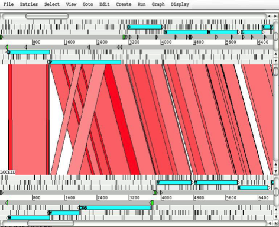
Key:
1. The
menus for the main window (described later in this chapter). Each menu contains
a sub-menu to control each of the sequences in the comparison. The Display menu
(see the section called The Display Menu) is the exception since it controls the overall display. Note that
all the menus apart from the File menu and the Display menus can also be accessed via
a pop-up menu on the third mouse button. See the
section called Other Mouse Controlled Functions and the section called The Pop-up Menu for more.
2.
This a view of the subject sequence
of the comparison. See the section called The DNA Views
for more information on how to operate this part of the window.
3.
This part of the window shows the
comparison between the two sequences. See the section called Comparison View
for more information.
4.
The query sequence of the comparison. See the section called The
DNA Views
for more.
The
File Menu
Read
An Entry ...
Read an entry for
this sequence, but keep it separate from the others. See the
section called The "Entry" in Chapter 1
to see what we mean when we say "entry". The new
entry will be marked as active (see the
section called The Active Entries in Chapter 1) and will be the new default entry (see the
section called The Default Entry in Chapter 1).
This
function only reads the feature section of the input file - the sequence (if
any) is ignored.
ACT
can read these feature file formats:
• EMBL or GenBank feature tables
• GFF
files
• Comparison
file formats discussed in the Running a Comparison section.
Save
Entry
Save
the entry to the file it came from, unless the entry has been given a new name,
in which case the entry is saved to a file with that name. If the entry has no
name, ACT will prompt the user for a new name.
Save
All
Save
all the entries that have been loaded on top of this sequence.
Write
Amino
Acids Of Selected Features
Prompt
for a file name and then write the translation of the bases of the selected
features to that file. The file is written in FASTA format.
PIR
Database Of Selected Features
Prompt
for a file name and then write the translation of the bases of the selected
features to that file. The file is written in PIR format (similar to FASTA, but
with a * as the last line of each record).
Bases
Of Selection
Prompt for a file
name and then write the bases of the selection to that file in the selected
format. If the selection consists of features (rather than a base range) then
the bases of each feature will be written to the file as a separate record. If
the selection is a range of bases, then those bases will be written.
Upstream
Bases Of Selection
Prompt
for a number and a file name, then write that many bases upstream of each
selected feature to the file in the selected format. For example if the
selected feature has a location of "100..200",
then asking for 50 upstream will write the bases in the range 50 to 99. Writing
upstream bases of a feature on the complementary strand will work in the
expected way.
Downstream
Bases Of Selection
Prompt for a number and a file name, then write that many
bases downstream of each selected feature to the file in the selected format.
All
Bases
Prompt
for a file name, then write the complete sequence to that file in the selected
format.
Codon
Usage of Selected Features
Prompt
for a file name, then write a codon usage table for the selected features. The
file in written in the same format as the data at Kazusa codon usage database site.
In the output file each codon is followed by its occurrence count (per
thousand) and it's percentage occurrence. (See the
section called Add Usage Plots ... in Chapter 3
to find out how to plot a usage graph).
Read
BAM / CRAM / VCF ...
ACT can read in and visualise
BAM, CRAM, VCF and BCF files. These files need to be indexed as described
below. Some examples can be found here.
BAM files need to be sorted and indexed using SAMtools. The index file should be in the same directory as the BAM file. This provides an integrated BamView panel in ACT,
displaying sequence alignment mappings to a reference sequence. Multiple BAM
files can be loaded in from here either by selecting each file individually or
by selecting a file of path names to the BAM files. The BAM files can be read
from a local file system or remotely from an HTTP server.
BamView will look to match
the length of the sequence in ACT with the reference sequence lengths in the
BAM file header. It will display a warning when it opens if it finds a matching
reference sequence (from these lengths) and changes to displaying the reads for
that. The reference sequence for the mapped reads can be changed manually in
the drop down list in the toolbar at the top of the BamView.
In
the case when the reference sequences are concatenated together into one (e.g.
in a multiple FASTA sequence) and the sequence length matches the sum of
sequence lengths given in the header of the BAM, ACT will try to match the
names (e.g. locus _tag or label) of the features (e.g. contig or chromosome)
against the reference sequence names in the BAM. It will then adjust the read
positions accordingly using the start position of the feature.
When open the BamView can be configured via the popup menu which is
activated by clicking on the BamView panel. The
'View' menu allows the reads to be displayed in a number of views: stack,
strand-stack, paired-stack, inferred size and coverage.
In
ACT the BamView display can be used to calculate the
number of reads mapped to the regions covered by selected features. In addition
the reads per kilobase per million mapped reads (RPKM) values for selected
features can be calculated on the fly. Note this calculation can take a while
to complete.
CRAM files
can be loaded in a similar fashion to BAMs. They can be created, sorted and
indexed using SAMtools.
Variant Call Format
(VCF) files can
also be read. The VCF files need to be compressed and indexed using bgzip and tabix respectively (see
the tabix manual ).
The compressed file gets read in (e.g. file.vcf.gz) and below are the commands
for generating this from a VCF file:
bgzip
file.vcf
tabix
-p vcf file.vcf.gz
Alternatively
a Binary VCF (BCF) can be indexed with BCFtools and read into Artemis or ACT.
As
with reading in multiple BAM/CRAM files, it is possible to read a number of
(compressed and indexed) VCF files by listing their full paths in a single
file. They then get displayed in separate rows in the VCF panel.
For single base
changes the colour represents the base it is being changed to, i.e. T black, G
blue, A green, C red. There are options available to filter the display by the
different types of variants. Right clicking on the VCF panel will display a
pop-up menu in which there is a 'Filter...' menu. This opens a window with check
boxes for a number of variant types and properties that can be used to filter
on. This can be used to show and hide synonymous, non-synonymous, deletion
(grey), insertion (magenta), and multiple allele (orange line with a circle at
the top) variants. In this window there is a check box to hide the variants
that do not overlap CDS features. There is an option to mark variants that
introduce stop codons (into the CDS features) with a circle in the middle of
the line that represents the variant. There are also options to filter the
variants by various properties such as their quality score (QUAL) or their
depth across the samples (DP).
Placing
the mouse over a vertical line shows an overview of the variation as a tooltip.
Also right clicking over a line then gives an extra option in the pop-up menu
to show the details for that variation in a separate window. There are also
alternative colouring schemes. It is possible to colour the variants by whether
they are synonymous or non-synonymous or by their quality score (the lower the
quality the more faded the variant appears).
There
is an option to provide an overview of the variant types (e.g. synonymous,
non-synonymous, insertion, deletion) for selected features. Also, filtered data
can be exported in VCF format, or the reconstructed DNA sequences of variants
can be exported in FASTA format for selected features or regions for further
analyses. These sequences can be used as input for multiple sequence alignment
tools.
Edit
In Artemis ...
Open
an Artemis edit window for this sequence and features. All changes made in the
Artemis window will be immediately visible in the ACT window and vice versa.
See the Artemis web pages for more about
Artemis.
Close
Close
this window.
The
Entries Menu
The items in this menu are used
to change which entry is the default entry and which entries are active (see the
section called The "Entry" in Chapter 1).
At the bottom of the menu there is a toggle button for each entry which
controls whether the entry is active or not.
Here
is a description of the other menu items:
Set
Name Of Entry
Set the name of an entry chosen
from a sub-menu. The name of the entry is used as the name of the file when the
entry is saved.
Set
Default Entry
Set
the default entry by choosing one of the entries from the sub-menu. (See the
section called The Default Entry in Chapter 1)
Remove
An Entry
Remove
an entry from ACT by choosing one of the entries from the sub-menu. The
original file that this entry came from (if any) will not be removed.
Remove
Active Entries
Remove
the entries that are currently active. (See the section called The
Active Entries in Chapter 1)
Deactivate
All Entries
Choosing this menu
item will deactivate all entries. (See the section called The Active Entries in Chapter
1)
The
Select Menu
The
items in this menu are used to modify the current selection (see the
section called The Selection in Chapter 1).
Feature
Selector ...
Open a new Feature Selector window. This window allows the
user to choose which features to select or view based on feature keys (see the
section called EMBL/Genbank Feature Keys in Chapter 1),
qualifier values (see the section called EMBL/Genbank
Feature Qualifiers in Chapter 1) and amino acid
motifs.
The
Select button will set the selection to the contain those features that match
the given key, qualifier and amino acid motif combination.
The
View button will create a new feature list (see the
section called The Feature List in Chapter 3) containing
only those features that match the given key, qualifier and amino acid motif
combination.
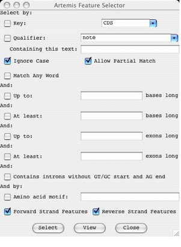
All
Reset
the selection so that nothing is selected then select all the features in the
active entries. [shortcut
key:
A]
All Bases
Reset
the selection so that nothing is selected then select all the bases in the
sequence.
Select
All Features in Non-matching Regions
Select
all features that have no corresponding match in ACT. This is used to highlight
regions that are different between sets of sequence. It will only take into
account matches that have not been filtered out using the score, identity or
length cut-off.
None
Clear
the selection so that nothing is selected. [shortcut key: N]
By
Key
Ask
the user for a feature key, reset the selection so that nothing is selected,
then select all the features with the key given by the user.
CDS
Features
Reset the selection
so that nothing is selected, then select all the CDS features that do not have
a /pseudo qualifier.
Same
Key
Select
all the features that have the same key as any of the currently selected
features.
Open
Reading Frame
Extend the current selection of
bases to cover complete open reading frames. Selecting a single base or codon
and then choosing this menu item has a similar effect to double clicking the
middle button on a base or residue (see the
section called Changing the Selection from a View Window)
for details).
Features
Overlapping Selection
Select those (and only those) features that overlap the
currently selected range of bases or any of the currently selected features.
The current selection will be discarded.
Features
Within Selection
Select
those (and only those) features that are fully contained by the currently
selected range of bases or any of the currently selected features. The current
selection will be discarded.
Base
Range ...
Ask
the user for a range of bases, then select those bases. The range should look
something like this:
100-200, complement(100..200), 100.200 or
100..200. If the first number is larger than the second the bases will be selected on
the forward strand, otherwise they will be selected on the reverse strand
(unless there is a complement
around the range, in which case the sense is reversed).
Feature
AA Range ...
Ask
the user for a range of amino acids in the selected feature and select those
bases. The range should look something like this: 100-200, or 100..200.
Toggle
Selection
Invert the
selection - after choosing this menu item the selection will contain only those
features that were not in the selection beforehand.
The
View Menu
Selected
Features
Open a view window for each selected feature showing it's
feature table entry. [shortcut key: V]
Selection
Open
a view window that will show the current selection. The window is updated as
the selection changes, so it can be left open.
When
one feature is selected the window will show the text (EMBL, GenBank or GFF
format) of the feature, the base composition, GC percentage, correlation score
(see the section called Show Correlation Scores in Chapter 3), and the bases and translation of the sequence of the feature.
When
two or more features are selected the window will show the text (EMBL, GenBank
or GFF format) of the features, the base composition, average GC percentage,
average correlation score, minimum/maximum GC content and minimum/maximum
correlation score of the feature sequence.
When
a range of bases is selected the window will show the base composition, GC
content percentage and the bases and translation of the sequence of the feature.
Search
Results
On
this sub-menu allows the user to view the results of feature searches that are
launched from the run menu in Artemis.
CDS
Genes And Products
Pop
up a feature list (see the section called The Feature List in
Chapter 3) of the CDS showing the gene names (from the /gene
qualifier) and the product (from the /product qualifier). This list includes
pseudo genes.
Feature
Filters
Each of the items
in this sub-menu each allow the user to view a subset of the active features.
An example of a subset is all those features with misc_feature as a key. The
features are displayed in a new window that contains a menu bar with possible
actions to apply to the subset, and feature list (see the
section called The Feature List in Chapter 3). Most of the possible
actions will apply only to the features in the list. For example "Show Overview" in the View
menu (see the
section called Overview) will include statistics only on the features in the list.
Suspicious
Start Codons ...
Show
those CDS features that have a suspicious start codon. ie.
the first codon of the feature isn't ATG (in eukaroytic
mode) or ATG, GTG and TTG (in prokaryotic mode). This function is effected by
the setting of the "Eukaroytic Mode" option
in the main options menu (see the section called Genetic Code Tables in
Chapter 2 for more).
Suspicious
Stop Codons ...
Show
those CDS features that have a suspicious stop codon. i.e. the last codon of
the feature isn't one of TAA, TAG or TGA.
Non
EMBL Keys ...
Show
those features that have a key that isn't valid for EMBL/GenBank entries.
Duplicated
Features ...
Show
those features that are duplicated (ie. features that
have the same key and location as another feature). These sort of duplicates
aren't allowed by the EMBL database.
Overlapping
CDS Features ...
Show
those CDS features that overlap another CDS feature (on either strand).
Features
Missing Required Qualifiers ...
Show
those features that are missing a qualifier that is required by the EMBL
database.
Filter
By Key ...
Show
those features that have a key chosen by the user.
Selected
Features ...
Show the currently selected
features in a new feature list. The contents of the list will remain the same
even if selection subsequently changes. This is useful for bookmarking a
collection of features for later use.
Overview
Open
a new window the will show a summary of the active entries and some statistics
about the sequence
(such as the GC content). [shortcut key: O]
Sequence
Statistics
The
overview window shows the following statistics about the sequence:
•
Number of bases.
•
GC percentage.
•
The number of each nucleotide in the sequence.
• GC
percentage of non-ambiguous bases – i.e. the GC content percentage ignoring
bases other than A,T,C and G. This should be the same as the "GC
percentage" above.
Feature
Statistics
The
overview window also shows the following statistics about the features in the
active entries (if there are any features). Note that the "genes" are
the non-pseudo CDS features.
• Number of
features in the active entries (see the section called The Active Entries in Chapter 1).
•
Gene density - the average number of non-pseudo CDS features
per 1000 bases.
•
Average gene length - the average length of non-pseudo CDS
features (not including introns).
•
Number of non-spliced genes.
•
Number of spliced genes.
•
Number of pseudo genes (ie. CDS
features with a /pseudo qualifier).
•
Protein coding (CDS) features.
•
Protein coding (CDS) bases.
•
Protein coding percentage - ie.
the number of coding bases excluding introns.
•
Coding percentage (including introns).
•
A summary of the number of features of each key (type) and
their colours.
Forward
Strand Overview
Open
a new window the will show a summary of the features and bases of the forward
strand.
Reverse
Strand Overview
Open
a new window the will show a summary of the features and bases of the reverse
strand.
Feature
Bases
Create
a view window for each selected feature, which shows bases of the feature.
Feature
Bases As FASTA
Create
a view window for each selected feature, which shows bases of the feature in
FASTA format.
Feature
Amino Acids
Create
a view window for each selected feature, which shows amino acids of the
feature.
Feature
Amino Acids As FASTA
Create
a view window for each selected feature, which shows amino acids of the feature
in FASTA format.
Feature
Statistics
Show
some statistics about each selected feature. On the left on the feature
information window is the amino acid composition of the feature. On the right
is the codon composition of the feature.
Feature
Plots
Open a window for
each selected feature that shows a plot of the Kyte-Doolittle
Hydrophobicity [short name: hydrophobicity],
the Hopp-Woods Hydrophilicity [short name: hydrophilicity], and an approximation of the
GCG Coiled Coils algorithm [short name: coiled_coil]. (For more detail
about the coiled coils algorithm see "Predicting Coiled Coils from Protein
Sequences", Science Vol. 252 page 1162.) [shortcut key: W]
Some general information about
graphs and plots in ACT can be found in the section called Graphs and Plots. Configuration options for graphs are described in the
section called Options For Plots and Graphs in Chapter 5.
Adjust
panel heights ...
Option
in ACT for adjusting the panel heights (BAM, CRAM, VCF, plots, comparisons) by
giving them different weights in order to distribute the space between each
component.
The
Goto Menu
The
items in this menu allow the user to navigate around the sequence and features.
Navigator
...
Open
a new navigation window. [shortcut key: G]
This
window allows the user to perform five different tasks:
1.
Scroll all the views so that a
particular base is in the centre of the display . To
use this function, type a base position into the box to the right of the
"Goto Base:" label then press the goto button at the bottom of the window. The requested base
will be selected and then the overview display and the DNA display will scroll
so that the base is as near as possible to the middle of the main window.
2.
Find the next feature that has
the given gene name . To use this function, type a
gene name into the box to the right of the "Goto
Feature With This Gene Name:" label and then press the goto
button. ACT will select the first feature with the given text in any of its
qualifiers and will then scroll the display so that feature is in view.
3.
Find the next feature that has
a qualifier containing a particular string . To use this
function, type a string into the box to the right of the "Goto Feature With This Qualifier Value:" label and
then press the goto button. ACT will select the first
feature with the given string in any of its qualifier values (see the section called EMBL/Genbank
Feature Qualifiers in Chapter 1)
and will then scroll the display so that feature is in view.
4.
Find the next feature that has
a particular key . To use this function, type a key
into the box to the right of the "Goto
Feature With This Key:" label and then press the goto
button. ACT will select the first feature with the given key and will then
scroll the display so that feature is in view.
5.
Find the next occurrence of a
particular base pattern in the sequence . To use this
function, type a base pattern into the box to the right of the
"Find Base Pattern:" label and then press the goto
button. ACT will select the first contiguous group of bases on either strand that
match the given base pattern and will then scroll the display so that those
bases are in view. Any IUB base code can be used in the pattern, so for example
searching for aanntt
will match any six bases that start with "aa" and ends with "tt". See Table 3-1
for a list of the available base codes.
6.
Find the next occurrence of a
particular residue pattern in the sequence . To use this
function, type an amino acid pattern into the box to the right of the
"Goto Amino Acid String:" label and then
press the goto button. ACT will select the first
contiguous group of bases on either strand that translate to the given amino
acids and will then scroll the display so that those bases are in view.
The
letter 'X' can be used as an ambiguity code, hence 'AAXXXDD' will match
'AALRTDD' or 'AATTTDD' etc.
Note
that for all the functions above except the first ("Goto
Base"), if the "Start search at beginning" option is set or if
there is nothing selected the search will start at the beginning of the
sequence. Otherwise the search will start at the selected base or feature. This
means that the user can step through the matching bases or features by pressing
the goto button repeatedly.
If
the "Ignore Case" toggle is on (which is the default) Artemis will
ignore the difference between upper and lower case letters when searching for a
gene name, a qualifier value or a feature key.
The
"Allow Substring Matches" toggle affects 2 and 3.
If on ACT will search for qualifier values that contain the given characters.
For example searching for the gene name CDC will find CDC1, CDC2, ABCDC etc. If
the toggle is off ACT will only find exact matches, so searching for the gene
CDC will only find features that have /gene="CDC"
not /gene="CDC11".
Start
of Selection
Scroll all the
views so that the first base of the selection is as close to the centre as
possible. If the a range of bases is selected the views will move to the first
base of the range. If one or more features are selected, then the first base of
the first selected feature will be centred. Otherwise, if one or more segments
(see the section called Feature Segments in Chapter 1) is selected then the first base of the first selected segment will be centred. [shortcut key: control-left]
End
of Selection
This
does the same as "Goto Start of Selection",
but uses the last base of the selected range or the last base of the last
selected feature or segment. [shortcut key: control-right]
Feature
Start
Scroll
the views to the start of the first selected feature.
Feature
End
Scroll
the views to the end of the first selected feature.
Start
of Sequence
Scroll
the views so that the start of the sequence is visible. [shortcut key:
control-up]
End
of Sequence
Scroll
the views so that the end of the sequence is visible. [shortcut key:
control-down]
Feature
Base Position ...
Ask
the user for a base position within the first selected feature, then scroll the
views so that that base position is centred.
Feature
Amino Acid ...
Ask
the user for an amino acid position within the first selected feature, then
scroll the views so that that position is centred.
The
Edit Menu
This menu contains
most of the functions that change the entries. Note that the changes will not
be saved back to the original files until one of the save functions in the File
menu is used.
Undo
This
function will undo the last change that was made using the Edit or Create
menus. Up to 20 changes can be undone. This menu item is only enabled when
there is something to undo. This limit can be changed in the options file (see the section called undo_levels in Chapter 5). [shortcut
key: U]
Redo
This
function will redo the last undo operation.
Selected
Features in Editor
Open an edit window for each selected feature. [shortcut
key: E]

From
the top down the edit window has these parts:
1.
At the top left is a selector for choosing the key of the
feature. This only contains a subset of the legal keys. The subset can be
changed by changing the common_keys option in
the options file (see the
section called common_keys in Chapter 5).
At
the top right of the edit window is a selector for adding a qualifier. For
example choosing note from
the menu will insert
/note="" into the qualifier edit area.
2.
Just below the key and qualifier
selector is the location entry field. ACT understands most of the EMBL location
syntax, including joins, complements, ranges with non-exact ends (eg.
(100.200)..>350) and references to
other entries (eg.
join(100..200,SPB23A1:100..200)).
3. Below the
location is a row of buttons:
•
The Complement button will complement the
contents of the location field.
•
The Grab Range button will grab the
currently selected range into the location field.
• The
Remove Range
button will remove the selected bases from the location string. This is
normally used to create an intron in a feature.
•
Pressing the Goto Feature button has the same effect as the
"Start of Selection" item in the "Goto"
menu. (See the
section called Start of Selection for
more).
•
The User
Qualifiers button opens a tool for maintaining user defined lists of
qualifiers (i.e. qualifiers in the form tag = value pairs on separate lines)
and the option to read qualifiers from OBO formatted files or URLs. In the intial screen (see below) you are invited to import your
qualifier list from the import options in the "File" menu. These
lists can be optionally saved between sessions in the file '.artemis.qualifiers' in the home directory.
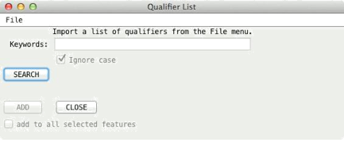
When
a qualifier list or OBO file has been added then it is possible to search for
keywords within a list. The qualifier selected in the drop down list (under the
SEARCH button) can then be added to the current feature annotation or added to
selected features in ACT. If the keywords text field is left blank then all
qualifiers are available from the drop down list of qualifier values.
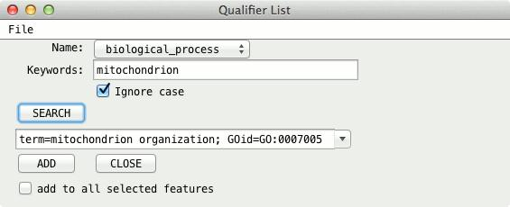
4.
The centre of the edit window
contains the qualifier entry section. The qualifiers should be entered in the same
way they appear in the feature table part of an EMBL entry, but without the
leading FT and spaces.
5.
The bottom of the window contains
three buttons. The OK
button will update the feature with the changes that have been made by the user
and will then close the edit window. The Cancel
button will discard the changes and then close the window. The Apply will make the changes, but will not
close the window. Before any changes are made the location and the qualifiers
are checked for formatting errors. Any errors will brought to the attention of
the user through the use of annoying pop-up boxes. No changes will be performed
until there all errors have been fixed.
Subsequence
(and Features)
Make
a copy (in a new edit window) of the selected bases and the features in that
range. Any features that overlap the end of the range will be truncated.
Find
Or Replace Qualifier Text
This
opens a search window with options to find or replace qualifier text. The
search can be restricted to features with a given key and/or it can be
restricted to a given qualifier name.
Boolean
operators (and/or) can be used in the search. Clicking on the Show Boolean Search Options displays 4 options.
1.
The Use
boolean operators (and, or, & |)
means that it uses any of these operators that are in the Find text field.
2.
The Match
any string (i.e. x OR y) means that the words in the Find text field will be separated by an
OR condition. So that it finds those features with qulaifiers
that contain any of the words.
3.
The Match
all string (i.e. x AND y) means that the words in the Find text field will be separated by an
AND condition. So that it finds those features with qulaifiers
that contain all of the words.
4.
The No
boolean search option is the
default. This means it searches for those features with qualifiers that contain
the complete text from the Find
text field.
In
addition selecting the Duplicate Qualifiers tab provides options to search for
or delete duplicate qualifiers.
Qualifier(s)
of Selected Feature
Change
...
This
function allows the user to add or change qualifiers on all the selected
features in one operation. The main part of the window acts like the qualifier
editing field of the feature edit window (see the
section called Selected Features in Editor).
Remove
...
This
function allows the user to remove all qualifiers with a particular name from
all the selected features.
Convert
...
This
function allows the user to convert all qualifiers of a particular type to
another qualifier for all the selected features.
Selected
Feature(s)
Duplicate
Make
a copy of each selected feature. Each new feature will be added just after the
original in the same entry as the original. [shortcut key: D]
Merge
Create
a new feature that contains all the exons and qualifiers of the selected
features. The selected features must all have the same key. [shortcut key: M]
Unmerge
If the selection
contains exactly two exons and those exons are adjacent in the same feature,
split the feature into two pieces between the exons. The original feature is
truncated and a new feature is created. The qualifiers of the old feature are
copied to new feature.
Unmerge
All Segments
All
exons in a feature are unmerged.
Delete
Remove
each selected feature from its entry. [shortcut key: control-delete]
Delete
Exons
Delete
the selected exons. The last exon of a feature can't be deleted (delete the
whole feature instead).
Remove
Introns
Delete
the selected introns.
Move
Selected Features To
Move
the selected features to another entry. Choose the destination entry from the
sub-menu.
Copy
Selected Features To
Copy
the selected features to another entry. Choose the destination entry from the
sub-menu.
Trim
Selected Features
To
Met
For
each of the selected features this function will attempt to move the start
position to the first ATG in the feature if the feature does not already start
on a ATG codon. If there is no ATG in the first thirty percent of the bases of
the feature the start position will be unchanged. The search will stop at the
end of the first segment of a multi-segment feature.
To
Any
This
works in the same way as "Trim Selected Features To Met",
but will attempt to move the start position of the feature to the first TTG,
ATG or GTG in the feature if it does not already start on one of those codons.
As above it will only search the first thirty percent of the feature bases and
will only search the first segment of a multi-segment feature.
To
Next Met
For each of the
selected features this function will attempt to move the start position to the
next ATG in the feature (the first codon is skipped). If there is no ATG in the
first thirty percent of the bases of the feature the start position will be
unchanged. The search will stop at the end of the first segment of a
multi-segment feature. [shortcut key: T]
To
Next Any
This
works in the same way as "Trim Selected Features To Next Met", but
will attempt to move the start position of the feature to the next TTG, ATG or
GTG in the feature (the first codon is skipped). As above it will only search
the first thirty percent of the feature bases and will only search the first
segment of a multi-segment feature. [shortcut key: Y]
Extend
Selected Features
To
Previous Stop Codon
Extend each of the
selected features which do not start on a stop codon so that each feature
starts just after the previous stop codon in this reading frame. [shortcut key:
Q]
To
Next Stop Codon
Extend
each of the selected features which do not end on a stop codon so that each
feature ends just before the next stop codon in this reading frame.
To
Next Stop Codon and Fix
Same
as above but in addition this fixes the stop codons.
Fix
Stop Codons
Check
and fix the stop codons to all the selected features. For each feature if the
last codon is a stop codon, then all is well, nothing further is done to the
feature. If the last codon is not a stop codon, but the very next codon is a
stop codon, then the end of the feature is moved forward by three bases. If
both the last codon and the very next codon after the feature are not stop
codons, the feature is selected, an error message is displayed and processing
stops immediately.
Automatically
Create Gene Names
Ask
for a gene name prefix (using a text requester), and then give a unique gene
name to each CDS
feature in the
active entries using that prefix. For example if there are four CDS features
with locations:
"1..500", "complement(100..600)", "200..700" and "complement(300..800)", entering
SPBC16A3 will give the four features
these names: SPBC16A3.01,
SPBC16A3.02c,
SPBC16A3.03
and
SPBC16A3.04c.
Fix
Gene Names
For
each selected CDS, add the gene name from the CDS to neighbouring/overlapping
mRNA, intron, exon, gene, 5'UTR and 3'UTR features. Warn about inconsistencies
such as overlapping CDSs.
Bases
Reverse
And Complement
Reverse
and complement the sequence and all the features in all the entries (active and
inactive).
Reverse
And Complement Selected Contig
Reverse
and complement the sequence and all the features in a selected contig feature.
If this option is used in ACT then all the matches within the contig are also
reversed. Any matches extending past the boundary of the contig are deleted.
The changes to the comparison file can be saved by right clicking in the
comparison window and selecting "Save Comparison File...". However,
ideally the comparison between the two sequences should be recalculated.
Delete
Selected Bases
Deletes the
selected range of bases (if any) from both strands. The deletion will not
proceed if the selected range overlaps any features.
Add
Bases At Selection
Prompt the user for some bases
to insert just before the selected bases. The operation will not proceed if
there is no selected range, but bases can be inserted anywhere in the sequence,
including inside a feature. The same bases, reversed and complemented, will be
inserted at the corresponding place on the opposite strand.
Add
Bases From File ...
Prompt
the user for the name of a file containing the bases to insert just before the
selected bases.
Replace
Bases At Selection
Prompt
the user for some bases to replace the selected bases.
Contig
Reordering ...
Opens
a 'Contig Tool' displaying contigs, i.e. with feature keys 'fasta_record'
or 'contig'. The former being created automatically for each sequence when a multiple
fasta sequence file is read in. The contigs in this tool
can then individually be selected and dragged and dropped to another location.
In this way the order of contigs and features within a contig can be changed.
If this is used in
ACT then the matches are also reordered with respect to the change in the
sequence. If a match spans the boundary of a contig that is being moved then if
possible it is split. In some situations where there is a match with 'indels'
then this is not possible and the match is deleted. The changes to the
comparison file can be saved by right clicking in the comparison window and
selecting "Save Comparison File...". However, ideally the comparison
between the two sequences should be recalculated.
Header
Of Default Entry
Open
a edit window containing the header of the default entry. Changes made in the
edit window will be applied immediately to the entry provided there are no
errors in the formatting of the header.
The
Create Menu
This
menu contains functions for creating new features (see the
section called EMBL/Genbank Features in Chapter 1) or entries (see the section called The "Entry" in Chapter 1).
New
Feature
Create
a new feature in the default entry with a key of "misc_feature"
(see the section called EMBL/Genbank
Feature Keys in Chapter 1), a
location of that spans the whole sequence and which has no qualifiers (see the section called
EMBL/Genbank Feature Qualifiers in Chapter 1).
Feature
From Base Range
Create a new feature in the
default entry with a key of "misc_feature",
no qualifiers and a location that exactly matches the selected range of bases.
If no bases are selected an error will be reported. [shortcut key: C]
Intergenic
Features
Create
new features between CDS features in the default entry all with the "misc_feature" key.
Features
From Non-matching Regions
Create
features in ACT spanning all the regions where a match is not to be found.
New
Entry
Create
a new entry with no name and no features. The new entry will become the default
entry (see the section called The Default Entry in Chapter 1).
Mark
Open Reading Frames ...
Create
a feature for each "large" open reading frame in the sequence. The
default minimum size of a "large" open reading frame can be changed
by changing the minimum_orf_size
option (seethe section called minimum_orf_size in
Chapter 5). If a codon usage file (see the
section called Add Usage Plots ...) has been read each new
ORF will have a codon usage score added as a /score qualifier. The new features can
then be filtered from the display (see "Set Score Cutoffs
..." in the section called The Pop-up Menu).
Mark
Empty ORFs ...
Create a feature for each open
reading frame that doesn't already contain a feature.
Mark
Open Reading Frames In Range ...
Create
a feature for each "large" open reading frame in a range of bases. A
range must be selected before using this command.
Mark
From Pattern ...
Open
a text requester to ask the user for a base pattern, then create a feature for
each group of bases that matches that pattern. A new entry will be created to
hold the features with the name "matches: <pattern>", where
<pattern> is the pattern that was entered be the user. Any IUB base code
can be used in the pattern, so for example, aanntt
will match any six bases that start with "aa" and ends with "tt".
Table
3-1. IUB Base Codes
|
|
|
|
|
|
|
|
|
|
|
R = A or G |
|
S = G or C |
|
B = C, G or T |
|
|
|
|
|
|
|
|
|
|
|
|
|
|
|
|
|
|
|
|
|
|
Y = C or T |
|
W = A or T |
|
D = A, G or T |
|
|
|
|
|
|
|
|
|
|
|
|
|
|
|
|
|
|
|
|
|
|
K = G or T |
|
N = A, C, G or T |
|
H = A, C or T |
|
|
|
|
|
|
|
|
|
|
|
|
|
|
|
|
|
|
|
|
|
|
M = A or C |
|
|
|
V = A, C or G |
|
|
|
|
|
|
|
|
|
|
|
|
|
|
|
|
|
|
|
|
|
|
|
|
|
|
|
|
|
|
|
|
|
|
|
|
|
|
Mark
Ambiguities
Create
a new feature for each block of ambiguous bases. The new features will have a
key of misc_feature and will created in a new entry
called "ambiguous bases".
The
Run Menu
This
menu is primarily used for running external programs on UNIX. Additionally
there are menu options to send sequences from selected features to the NCBI web BLAST, InterPro,
Pfam and
Rfam.
Once
configured correctly, running an external program should be as simple as
selecting some features of interest, then choosing one of the items from the
run menu. When the external programs finishes the results can viewed using the
"Search Results" item in the View menu (see the
section called Search Results).
Configuring
the Run Menu
To use this feature the run_blastp,
run_tblastn
etc. scripts that are supplied with Artems/ACT will
need to be changed to reflect the paths and databases that are configured at
each site. Note that the run
scripts are stored in the etc/
directory.
Each
external program that is listed in the options file (see the section called feature_dna_programs and the section called feature_protein_programs in Chapter 5)
gets a "run" menu item and a "set options" menu item. For
each external program (such as blastp)
there must be a shell script available that sets any necessary environment
variables and then launches the search/analysis program (for blastp the script is called run_blastp).
Taking
blastp as an example, this is the sequence of events
that occurs when the user selects the "Run blastp
on selected features" menu item:
1. ACT creates
a new directory in the current directory called blastp.
2.
A protein FASTA sequence file is
written in the new directory for each selected feature. (For a DNA search
program such as blastn the file will be a DNA FASTA
file). The sequence file name will be something like: blastp/features.tab.seq.00001.
3.
The name of the expected output file
is stored in the feature in a qualifier called /blastp_file. If the entry is called features.tab then
the qualifier will be set to something
like: /blastp_file="blastp/features.tab.seq.00001.out".
Note that because the file name is stored in the entry you will need to save
the entry to keep the association between the features and the output files.
4.
A file is then written (called
something like blastp/file_of_filenames.1) that contains the
names of all the newly created sequence files in the blastp
directory.
5.
ACT then tries to read the run_blastp
script from the Artemis/ACT installation directory. The script is executed like
this:
run_blastp
blastp/file_of_filenames.1 [options]
where [options]
currently must be a single word (normally a database to search). In the case of
blastp/blastn/fasta etc. the second argument of the script is passed
directly to the blast/fasta as the database name. For
testing purposes it is possible to run run_blastp on the command line
with the same arguments as above.
run_blastp
will
run blastp on each of the sequence files listed in
file_of_filenames.blastp
and
save the output in the corresponding .out file.
6.
If the program is successfully
started, control will immediately return to the user. When run_blastp finishes a message will be displayed
to alert the user.
If
necessary, it is possible to exit once ACT indicates that the external program
has been started and the entry has been saved. run_blastp will keep running
in the background.
The
Graph Menu
Some
general information about the graphs can be found in the
section called Graphs and Plots. Configuration
options for graphs are described the section called Options For Plots and
Graphs in Section 5.
Hide
All Graphs
This item will turn off all the
visible graphs.
Add
Usage Plots ...
This menu item prompts the user for the name of a file which
should contain codon usage data in the same format as the data at this web
site.
If ACT successfully loads the codon usage file two new plots will be added to
the display menu and will be immediately visible. One plot shows the codon
scores (in a sliding window) for each of the forward reading frames and the
other shows the same thing for the reverse reading frames. [short name: codon_usage]
The
graph is calculated using the codon preference statistic from Gribskov et al. (Nucl.
Acids Res. 12; 539-549 (1984)).
Here is an example usage file:
UUU
32.2( 48423) UCU 30.5( 45913) UAU 21.8( 32829) UGU
8.9( 13371)
UUC
13.0( 19519) UCC 12.1( 18149) UAC 11.8( 17721) UGC
5.6( 8372)
UUA
26.0( 39138) UCA 17.9( 26850) UAA
1.3( 1944) UGA
0.5( 733)
UUG
24.0( 36134) UCG 8.0( 12055)
UAG 0.5( 705)
UGG 10.9( 16364)
CUU
25.3( 38015) CCU 21.9( 32964) CAU 16.3( 24577) CGU 16.3( 24495)
CUC 7.3( 10922)
CCC 8.4( 12619) CAC
6.4( 9653) CGC
6.2( 9316)
CUA 8.6( 12957)
CCA 12.7( 19075) CAA 27.3(
41066) CGA 7.9( 11896)
CUG 6.3(
9503) CCG 4.6(
6910) CAG 10.9( 16457) CGG
3.0( 4487)
AUU
35.0( 52636) ACU 22.9( 34419) AAU 33.9( 51009) AGU 14.7( 22108)
AUC
12.6( 19000) ACC 10.9( 16378) AAC 17.9( 26895) AGC
9.2( 13905)
AUA
13.1( 19726) ACA 13.9( 20898) AAA 39.3( 59079) AGA 11.1( 16742)
AUG
20.9( 31376) ACG 6.5(
9744) AAG 25.2( 37825) AGG
5.1( 7615)
GUU
29.3( 44015) GCU 30.2( 45397) GAU 38.1( 57240) GGU 22.0( 33101)
GUC
11.0( 16497) GCC 11.6( 17518) GAC 15.8( 23749) GGC
8.5( 12717)
GUA
12.3( 18451) GCA 15.7( 23649) GAA 44.3( 66550) GGA 15.7( 23623)
GUG 8.3( 12422)
GCG 5.3( 8011)
GAG 21.3( 31979) GGG 4.3(
6497)
Add
User Plot ...
ACT is able to display some
types of user data in a graph that looks like the GC content graph (see the
section called GC Content (%)). This menu item will prompt the user for the name of a data file
which should
contain one of the following possible graph file formats:
1.
one line per base and one or more
columns of integer or floating point values per line. The number of lines
should match the number of bases in the sequence. ACT will plot each data point
for the corresponding base. Each column represents a data set for a line.
Example extract:
21.4 1910.7
44
1126.1
1911.7 0
0 0
0 1782.0
1937.5 65.4
...
2.
the first column corresponds to the
base position and is an integer. Note to distinguish this format from the
previous format the first line of the file must start with a '#'. Line colours
can be specified in the header using the keyword colour followed by space
separated R:G:B values for each line. The next rows(s) are the data values. Example
extract:
|
# BASE |
VAL1 |
|
VAL2 |
VAL3 |
|
VAL4 |
VAL5 |
VAL6 |
|
|
|
# colour 5:150:55 255:0:0 |
0:255:0 0:0:255 100:100:100 50:150:50 |
|||||||||
|
176 |
2204.8 |
848.23 |
0 |
|
0 |
0 |
536.04 |
|||
|
278 |
804.99 |
|
0 |
|
837.2 |
0 |
681.63 |
0 |
||
|
452 |
0 |
699.98 |
0 |
|
0 |
|
0 |
251.18 |
|
|
|
553 |
0 |
0 |
|
0 |
|
0 |
|
0 |
52.4 |
|
|
654 |
0 |
0 |
|
0 |
|
0 |
|
334.2 |
0 |
|
|
686 |
0 |
0 |
|
652.78 |
0 |
|
0 |
0 |
|
|
|
831 |
0 |
0 |
|
0 |
|
0 |
|
0 |
67.97 |
|
|
... |
|
|
|
|
|
|
|
|
|
|
3.
indexed tab delimited file. For this
tabix is used (see the tabix manual)
to create an index. This is especially useful for large data sets as it is
memory efficient and only reads the data corresponding to the visible region in
ACT. The first columns contain the sequence name and base position and this is
then followed by the values to be plotted.
For
example 'file.plot' is a tab delimited file with
column 1 containing the sequence name and column 2 the positions, this is
sorted and then indexed with tabix:
(grep
^"#" file.plot; grep -v ^"#" file.plot | sort -k1,1 -k2,2n) | bgzip
> sorted.plot.gz ;
tabix
-s 1 -b 2 -e 2 sorted.plot.gz
Example extract:
|
foo |
1 |
5 |
5 |
129 |
5 |
5 |
239 |
|
foo |
2 |
1 |
10 |
124 |
12 |
10 |
234 |
|
foo |
3 |
5 |
16 |
129 |
12 |
15 |
229 |
|
foo |
4 |
0 |
23 |
124 |
20 |
20 |
414 |
|
foo |
5 |
5 |
22 |
121 |
28 |
25 |
419 |
|
foo |
6 |
30 |
36 |
124 |
32 |
30 |
412 |
|
... |
|
|
|
|
|
|
|
4.
the next two formats are types of Wiggle formats.
The first is variableStep. Note that ACT only
supports the colour element in the track line.
track
type=wiggle_0 color=255,200,0
variableStep
chrom=chr19 span=10
310 1
320 12
330 18
340 6
350 5
430 3
440 1
Right
clicking on the graph and selecting the 'Configure...' option will display the
'Plot style' option for wiggle plots. The plots can be displayed as histograms
or as a heat map.
5. the next format supported by ACT is fixedStep and is again a Wiggle format.
track type=wiggle_0 name="fixedStep"
description="fixedStep format"
visibility=full autoScale=off viewLimits=0:1000
color=0,200,100 maxHeightPixels=100:50:20
graphType=points priority=20
fixedStep
chrom=chr19 start=7401 step=300 span=200
1000
900
800
700
600
500
400
300
200
100
6. Blast
tabular format. The blastall command must be run with
the -m 8 flag which generates one line of information per HSP. Alternatively
the MSPcrunch file format can be read in as a graph
file format. ACT will prompt the user to determine whether it uses the query or
subject coordinates to plot the graph.
When
a file is prompted for there is an option which if selected will mean the log
transform is plotted.
GC
Content (%)
Controls whether the GC content
plot is visible. This is a graph of the average GC content of a moving window
(default size 120 base), across the bases visible in the overview window.
[Default: off] [short name: gc_content]
GC
Content (%) With 2.5 SD Cutoff
Controls
whether the cutoff GC content plot is visible. This
is similar to the GC content graph, but the plot is clipped so that the GC
content of each algorithm window is shown only when it is more than 2.5 times
the standard deviation of the GC content in all the windows. [Default: off]
[short name: sd_gc_content]
AG
Content (%)
Controls whether the AG content
plot is visible. This is a graph of the average AG content of a moving window
(default size 120 base), across the bases visible in the overview window.
[Default: off] [short name: ag_content]
GC
Frame Plot
Controls
whether the GC frame plot is visible. This graph is similar to the GC content
graph but shows the GC content of the first, second and third position
independently. For more information on the algorithm and on how to interpret
the result see this web page.
See
Ishikawa, J. and Hotta,
K. FEMS Microbiol. Lett. 174:251-253 (1999) and
GC frame plot for
more information on the algorithm.
[Default:
off] [short name: gc_frame]
Correlation
Scores
Controls whether
the (forward) correlation scores plot is visible. The graph shows the
correlation between the amino acid composition of the globular proteins in
TREMBL and the composition of the base translation in each of the three reading
frames. The green line represents forward frame 1, blue represents frame 2 and
red represents frame 3. [Default: off] [short name: correlation_score]
Reverse
Correlation Scores
This
does the same as "Correlation Scores", but does the calculation on
the reverse strand. The green line represents reverse frame 1 (the bottom frame
line), blue represents frame 2 and red represents frame 3. [Default: off]
[short name: correlation_score]
GC
Deviation (G-C)/(G+C)
Controls
whether the GC deviation plot is visible. This graph shows the difference
between the "G" content of the forward strand and the reverse strand.
See
"Asymmetric substitution patterns in the two DNA strands of bacteria"
Lobry JR. - Mol Biol Evol 1996 May;13(5):660-5.
[Default:
off] [short name: gc_deviation]
AT
Deviation (A-T)/(A+T)
Controls
whether the AT deviation plot is visible. This graph shows the difference
between the "A" content of the forward strand and the reverse strand.
[Default: off] [short name: at_deviation]
Karlin
Signature Difference
This menu item
toggles the display of the graph of the dinucleotide absolute relative
abundance difference between the whole sequence and a sliding window.
For
details of the algorithm see "Global dinucleotide signatures and analysis
of genomic heterogeneity" Samuel Karlin - Current Opinion in Microbiology 1998,
1:598-610.
[Default:
off] [short name: karlin_sig]
Cumulative
AT Skew and Cumulative GC Skew
AT
skew is calculated as ([A]-[T])/([A]+[T]), where [A] and [T] are the counts of
these bases in the window. Grigoriev A (1999) Strand-specific compositional
asymmetries in double-stranded DNA viruses. Virus Research 60, 1-19.
Positional
Asymmetry
Shulman
MJ, Steinberg CM, Westmoreland N (1981) The coding function of nucleotide
sequences can be discerned by statistical analysis. J Theor Biol 88:409-20.
Informational
Entropy
Konopka
Andrzej (1984) Is the information content of DNA
evolutionarily significant? J Theor Biol 107:697-704. Informational
entropy is calculated from a table of overlapping DNA triplet frequencies, using equation 1 in the above reference. The use
of overlapping triplets smooths the frame effect.
Scaled
Chi Square
Shields
DC, Sharp PM (1987) Synonymous codon usage in Bacillus
subtilis reflects both translational selection and mutational biases.
Nucleic Acids Res 15:8023-40.
Mutational
Response Index
Gatherer
D, McEwan NR (1997) Small regions of preferential codon
usage and their effect on overall codon bias--the case of the plp gene. Biochem Mol Biol Int
43:107-14.
Effective
Codon Number
Wright
F (1990) The 'effective number of codons' used
in a gene. Gene 87:23-9, and Fuglsang A (2004) The 'effective number of codons'
revisited. Biochem Biophys
Res Commun. May 7;317(3):957-64.
Intrinsic
Codon Deviation Index
Freire-Picos MA, Gonzalez-Siso MI,
Rodriguez-Belmonte E, Rodriguez-Torres AM, Ramil E, Cerdan ME (1994) Codon usage in Kluyveromyces
lactis and in yeast cytochrome c-encoding genes. Gene
139:43-9.
The
Display Menu
The
items in this menu control the global appearance of the display.
Hide
Frame Lines
Selecting this menu
item will turn off the frame lines of the query and subject views. The frame
lines can be turned on selectively using the pop up menu in the view (The
Pop-up Menu
Show
Frame Lines
Selecting
this menu item will turn on the frame lines of the query and subject views.
The
DNA Views
The
two sequence views in ACT show the forward and reverse strands of the sequence
and a representation of the three translation frames in each direction. The top
view shows the subject sequence of the comparison (see 2), the
bottom view shows the query sequence (see 4). The
horizontal scrollbar controls which part of the sequence is currently visible.
The scroll bar at the left controls the zoom level. By default the view shows
only the stop codons in each translation frame, but if the view is zoomed in it
will show the complete six frame translation.
See
also the
section Comparison View in Chapter 3.
Changing
the Selection from a View Window
To select a feature
just click on it with the first mouse button. This will unselect anything that
is currently selected. To add a feature to the selection rather than replacing
the current selection, hold the shift
key while clicking. A single feature can be removed from the selection in the
same way, because shift-clicking acts as a toggle. The situation is made
slightly more complicated by the existence of spliced genes. When a feature
segment (exon) is added to the selection the feature that contains the segment
is implicitly added as well. When the last segment of a feature is removed from
the selection, the feature is implicitly removed.
A
single base or amino acid can be selected simply by clicking on it. A range of
bases can be added by clicking on the base at one end of the range then
shift-click on the base at the other end of the range. Alternatively you can
drag out a range of bases: click on a base then hold the mouse button down and
move to the other end. To select a complete open reading frame (ORF), double
click the middle mouse button (see the section called Notes on Using The
Mouse) anywhere inside the ORF (see the section
called Open Reading
Frame for another way to select an ORF).
See
the section called The
Selection in Chapter 1 for more about the selection.
Other
Mouse Controlled Functions
Double
clicking on a feature with the first mouse button causes the view to centre
itself on that feature. Similarly, double clicking the first mouse button on a
base or amino acid will centre the view on that base/amino acid.
A double click of the middle
mouse button on a feature will open an edit window for that feature. This is
the same as clicking once and then choosing the Edit Selected Features menu
item (see the section called Selected Features).
The
third button activates a pop-up menu with functions specific to this view. See the section called The Pop-up Menu
for more.
The
Pop-up Menu
The pop-up menu is activated by
pressing the third mouse button (see the section called Notes on Using The
Mouse) on a feature view. The menu is split into three sections. The top
contains functions that will act on the current view. The middle contains shortcuts to some of
the main window menus. The bottom contains four toggle buttons which influence
the appearance of the view.
Pop-up
Menu Functions
Note
that not all of these functions are available all the time (the first two are
only shown when there are some selected features).
• Raise
Selected Features. Raise the selected features so that they
appear in front of all other features.
•
Lower Selected Features. Make the selected features go
behind all the other features.
• Smallest
Features In Front. Sort the visible features so that
the smallest features appear in front of the larger ones. This is only
necessary when the user has manually rearranged the features using "Raise
Selected Features" or "Lower Selected Features".
• Zoom
to Selection. Scroll and scale the display so that
the current selection is centred and full width.
•
Select Visible Range. Select the currently visible
bases on the forward strand.
• Select
Visible Features. Select those (and only those)
features that currently visible in this view. Any features that are off
screen or have been filtered out with the "Set Score Cutoffs
..." control.
• Set
Score Cutoffs ... The score cutoffs panel allows the user to filter the features of the
active entries so that features with low or high scores are not shown.
The "score" of a feature is the value of the /score qualifier and should be a number
from 0 to 100. The cutoffs window has two sliders.
Any feature that has a score less than the value of the top controller or more
than the value of the bottom controller will not be shown. Features with no /score qualifier will always be shown.
Toggle
Buttons
Feature
Labels
This toggle button controls
whether the feature labels are displayed on their own line (when the toggle is
on) or on the top of the features (when the toggle is off). The default setting
for this toggle can be set in the options file (see the
section called feature_labels in Chapter 5).
One
Line Per Entry
This
toggle controls whether the entries are shown in the context of the three frame
translation or one entry per line on screen. In the first case the entries will
be overlaid, in second case they will be shown in parallel. The default setting
for this toggle can be set in the options file (see the
section called one_line_per_entry in Chapter 5).
Forward
Frame Lines
This
toggle button controls whether or not to show the 3 frame translation of the
forward sequence.
Reverse
Frame Lines
This
toggle button controls whether or not to show the 3 frame translation of the
reverse sequence.
Start
Codons
Toggle the display
of start codons in the view. See the section called Genetic Code Tables in
Chapter 2 to find out how to change which start codons to use.
Stop
Codons
Toggle
the display of stop codons in the view.
Feature
Arrows
Toggle
the display of directional arrows on each feature. The default setting for this
toggle can be set in the options file (see the
section called draw_feature_borders in Chapter 5).
Feature
Borders
Toggle
the display of black borders around each feature. The default setting for this
toggle can be set in the options file (see the section called draw_feature_borders in Chapter 5 ).
All
Features On Frame Lines
Normally
non-protein features are drawn on the DNA lines. This toggle allows the user to
force all features to be drawn on the frame lines, which can sometimes improve
readability. The default setting for this toggle can be set in the options file
(see the section called features_on_frame_lines
in Chapter 5).
Flip
Display
If
selected the sequence and features will be drawn on screen as if they are
reverse complemented with the first base to the right of the screen.
Colourise
Bases
This
toggle turn base colouring on or off. (Note that this feature is completely
unless, it exists for amusement only).
Scrolling
The View
Moving
the horizontal scrollbar will change the part of the sequence that is visible.
The position of the view can also be changed by using the Goto
menu (see the section called The Goto Menu in
Chapter 3) by double clicking the first mouse button on a feature in
one of the sequence views by double clicking on a base or amino acid.
Changing
The Scale
The
vertical scrollbar at the right edge of the view controls the scale - moving
the scrollbar up will zoom in and moving the scrollbar down will zoom out. When
the scrollbar is at the top (at its most "zoomed-in" position), the
complete six frame translation is shown. Otherwise only the stop codons are
shown.
"Direct
Editing"
The direct editing
option (See the section called Enable Direct Editing in Chapter 2)
enables the user to change the start or end position of a segment by dragging
it around with the mouse. This works best in the DNA view window. As an
example, to move the start position, click the mouse button on the first base
of the feature or exon, hold the button down, move the mouse pointer to the
desired position, then release the button.
Comparison
View
This
part of the window shows the comparison between two sequences. Each red/pink
box corresponds to single match, with red representing a good match and
white/pale pink a lower scoring match. This view cannot be scrolled directly,
instead it tracks the movement of the subject and query sequence views (see the
section called The DNA Views in Chapter 3).
See
3 to see where this view fits
in the main window.
Controls
The
vertical scrollbar at the right of the view sets the minimum size (in bases on
the subject sequence) of the matches that are displayed. The default is 1, so
when started ACT will show all matches.
Clicking
the left button on a match will highlight the match. Double clicking the mouse
on one of the matches will cause the sequence views to align around that match.
Clicking the middle mouse
button toggles the locking of the two sequences that are being compared by this
comparison view. When locked the sequences will scroll in parallel. When
unlocked the sequences can be scrolled independently. (See the
section called Notes on Using The Mouse if you do not have
a middle mouse button).
The
Comparison View Pop-up Menu
The
pop-up menu is activated by pressing the third mouse button within the comparison
view. The menu items are as follows:
• View
Selected Matches. Creates a new window which contains
a list of currently selected (ie. yellow)
matches. Clicking on a match in the list will centre the comparison view on
that match.
•
Flip Query Sequence. Flips
the query sequence display so that it appears to be reverse complemented.
(See the
section called Flip Display.)
•
Flip Subject Sequence. Flips
the subject sequence display so that it appears to be reverse complemented.
(See the
section called Flip Display.)
•
Lock Sequences. Lock the two sequences so that they
scroll together.
•
Unlock Sequences. Allow the two sequences to scroll
independently.
• Set
Score Cutoffs ... Pop-up a
gadget that allows the matches to be filtered on "score", generally
the BLAST score .
• Set
Percent ID Cutoffs ... Pop-up
a gadget that allows the matches to be filtered on the percentage
identity.
• Offer
To RevComp. When this option is
"on", double clicking on a reverse complemented match will
cause ACT to ask the user whether to flip the query sequence before centering on the match. If "off" the match will
just be centred.
• Ignore
Self Matches. When this option is "on",
matches that have the same start and end positions on both the subject
and query sequences will not be shown.
The
Feature List
The
feature list is the bit at the bottom of the main window of Artemis (see the
section called Overview of the Comparison Window in Chapter 3). The same component is used by the two items in the view menus
that show a sub-set of components (see the section called CDS Genes And Products and the section called Feature Filters). The list contains information about each feature in each active
entry (see the section called The Active Entries in Chapter 1), one per line.
The
lines show this information about the feature: the colour (see the section
called Feature Colours in Chapter 1), the key, start base, end base, the note field (if any) and then
the remaining qualifiers in EMBL/GENBANK format. If the correlation scores option is on then
the scores will be shown just before the note in each CDS line.
Changing
the Selection from the Feature List
To
select a feature from the list just click on it with the first mouse button.
This will unselect anything that is currently selected. To add a feature to the
selection rather than replacing the current selection, hold the shift key while clicking. A single feature
can be removed from the selection in the same way, because
shift-clicking acts as a toggle.
See
the section called The
Selection in Chapter 1 for more about the selection.
Other
Mouse Controlled Functions
Double
clicking on a feature with the first mouse button causes both views and the
feature list to centre themselves on that feature.
A double click of the middle
mouse button on a feature will open an edit window for that feature. This is
the same as clicking once and then choosing the Edit Selected Features menu
item (see the section called Selected Features in Editor).
The
Pop-up Menu
The
pop-up menu is activated by pressing the third mouse button (see the
section called Notes on Using The Mouse) anywhere on the feature
list. The menu contains shortcuts to some of the main window menus and three toggle
buttons:
Save
List to File
Save
the list of features to a file.
Show
Selected Qualifier
A
qualifier can be selected to be displayed in the feature list.
Show
Correlation Scores
If
this toggle is on the correlation scores for each feature will be show between
the end base and the note.
Show
Gene Names
This button controls whether the key or gene name is shown
for each feature. The "gene name" is actually the /label qualifier of the feature. If there
is no /label then the /gene qualifier is used. If neither of
the qualifiers exists then the key is used.
Show
Qualifiers
If
this option is on the feature qualifiers will be displayed after the note.
Show
Product
This
button controls whether the /note or /product is shown
for each feature. [default: /note ]
Scrolling
The List
The scrollbar on the right of the list controls which part
of the list of active features is visible. The list will also move if the user
double clicks on a feature in overview or DNA view areas, in which case the
list will scroll to that feature.
Graphs
and Plots
The
DNA plots are accessed from the Graphs(top) and Graphs(bottom) menus (see the
section called The Display Menu). When
a graph is turned on it is locked to the overview window, so it will follow the overview window when the
overview is scrolled. It will also automatically change the viewing scale to
match the scale of the overview window. The vertical scrollbar to the right of
the graph controls the window size of algorithm.
The feature plots window (see the
section called Feature Plots) has a horizontal
scroll bar that sets the position of the plot in the feature. As with the DNA
plots, the vertical scrollbar to the right of the graph controls the window
size of algorithm.
Note that clicking the left
mouse button on the plot will show the base or residue at that position.
Clicking the right mouse button will pop-up a menu. The menu contains a toggle
which controls whether the graph is scaled and some menu items which allow the
maximum window size to be set.
Notes
on Using The Mouse
ACT makes use of all three
buttons of the mouse under X, but other windowing systems often have less than
three buttons. To make life easier when running ACT on those systems, there are
some alternative key bindings.
On
Windows pressing the alt
or meta key and the first
mouse button will give the same effect as pressing mouse button three (usually
a pop-up menu). Pressing the control
key and the first mouse button will do the same thing as mouse button two.
On
Macintosh systems pressing the control
key and the mouse button will give the same effect as pressing mouse button three
(usually a pop-up menu). Pressing the alt
key and the mouse button will do the same thing as mouse button two.
Chapter
4. Secure Shell (SSH) Plugin To ACT Overview of the SSH Plugin
This
is a plug-in to ACT that enables you to view and transfer files from a local
machine (e.g. PC/MacOSX/UNIX) to another remote file system (i.e. any other
file system that you have ssh access to). The main
areas where this is useful are:
• file
management for both local and remote files. Files can be transferred by
dragging and dropping between file systems. Multiple files can be selected and
transferred in this way.
•
launching Artemis and ACT with sequences and tab files from
files on the remote machines.
Login
In
From the ACT launch window go
to the 'File' menu and select 'Open SSH File Manager'. A file manager window
will then open with a local file manager at the top. Underneath this is a
remote file manager with a section to enter login details.
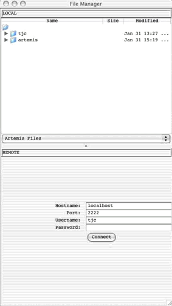
If
you can connect directly to the remote machine give the hostname, username and
password. Alternatively if you are using a SSH tunnel (see the
section called Setting up a SSH tunnel) then use
localhost and the appropriate port number.
Setting
up a SSH tunnel
The tunneling capability of SSH Secure Shell allows people to
access their email, intraweb pages and files securely
even when working away from the office. This can be used with ACT and this
section provides some examples of setting up tunnelling. It may be necessary to
consult your friendly system
administrator about the details on how best to do this.
On
UNIX the ssh configuration can be set in the
file ~/.ssh/config.
This contains the information to set up a tunnel that looks like this:
Host *.sanger.ac.uk
LocalForward
2222 machine.sanger.ac.uk:22
User tjc
Once
this configuration file is in place you can login from a UNIX window to set up
a tunnel.
On
Windows you can use Putty, See the section called Using Putty to Set Up A Tunnel.
When the tunnel has
been established you can start Artemis and enter 'localhost' into the Hostname
field in the login window and the port number (e.g. 2222 in the above example).

The
file manager can be used to drag and drop files between each file system. If
you right click on a selected file this will provide you with a pop-up menu
(see below) enabling you to delete, rename and
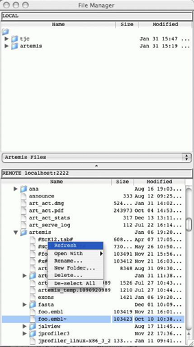
Files on the remote
file system can be double clicked on and opened in Artemis (in the same way
they can be opened from the local file manager). Tab files can be read in by
dragging them from the remote file manager and dropping them into the Artemis
window.
Note
for ACT the sequence filename can be dragged from the file manager into the
file selection box (if the files are not found locally the are then located on
the server). The tab files in ACT can be dragged from the file manager and
dropped on the relevant sequence display.
When
files are saved, if the entry orginated from the
remote file system then this is saved locally in the current working directory
and to the remote file as well.
Using
Putty to Set Up A Tunnel
On
Windows you can use Putty
to
set up a ssh tunnel. Below are settings that can be
used in Putty to set up a SSH tunnel.
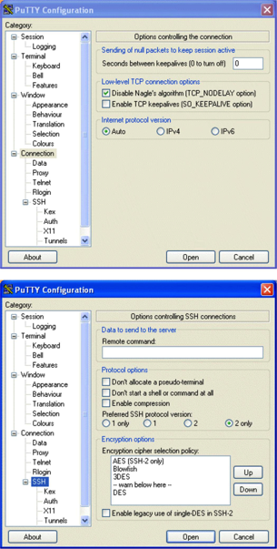
SSH
2 only is probably recommended here.
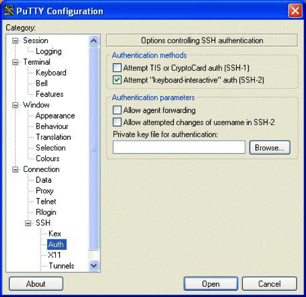
X11
forwarding is not necessary
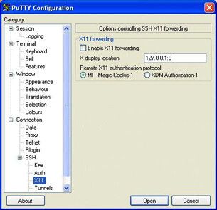
Set
the source port to 2222 and set the destination to hostname:port
(e.g. pcs2.internal.sanger.ac.uk:22).
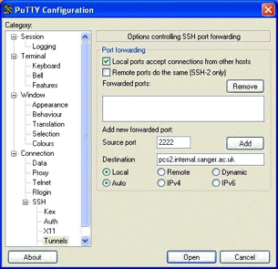
Click
'Add' to add this to the list of forwarded ports.
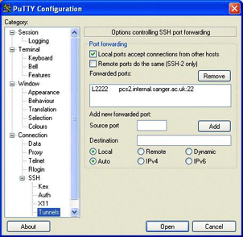
Run
Artemis and select the 'SSH File Manager' from the 'File' menu. At the bottom
fill in login details and click on the 'Connect' button. Loging
in may take a minute (depending on the connection).
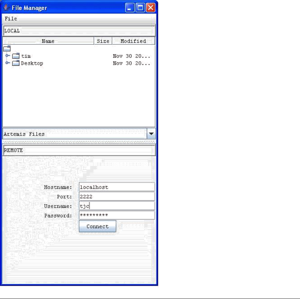
Chapter
5. ACT Configuration Options
The
Options File
When
started on ACT will potentially look in 5 different places for files to examine
for configuration information. ACT reads from the locations in order, so the
user can override the default options. Note that on Macintosh and Windows
systems the "current directory" mentioned below is the directory
where the ACT application has been installed.
This is the search order:
• The
standard ACT options are read first. On UNIX this file is in the file etc/options in the ACT distribution
directory. Changing that file will change the options settings for all users.
On Macintosh and Windows system the standard options are stored in the ACT
application itself and can't be changed (easily).
•
If the user has specified an options
file on the command line with the -options
argument, it will be read next. (UNIX only – see the
section called UNIX Command Line Arguments for ACT in Chapter 2
for more).
• If
there is a file called diani.ini
in the current directory it will be read. This is for backwards compatibility.
• If
there is a file called options,
options.txt
or options.text
in the current directory it will be read.
•
If there is a file in the user's home directory called .artemis_options it will be read.
ACT
Option Descriptions
This section describes the possible
options for ACT.
font_size
This option will set the font size
for all the ACT windows. [default: 14]
font_name
This
option is used to choose the font for all the ACT windows. The font must be
fixed-width. [default:
"Monospaced"]
base_plot_height
The
height (in pixels) of each of the base plots. [default: 150]
feature_plot_height
The
height (in pixels) of each of the feature plots. [default: 160]
draw_feature_borders
If set to yes, borders will be
drawn around each feature and each exon. if set to no, borders will only be
drawn around the selected features. This can also be set in the views popup
menu (see the section called Feature Borders in Chapter 3). [default:
"yes"]
show_forward_lines
If
set to yes, the forward frame lines are shown by default. This can also be set
in the views popup menu. [default: "yes"]
show_reverse_lines
If
set to yes, the reverse frame lines are shown by default. This can also be set
in the views popup menu. [default: "yes"]
draw_feature_arrows
If set to yes, a direction arrow will be drawn around at the
end of each feature. if set to no, no arrows will be drawn. This can also be
set in the views popup menu (see the section called Feature Arrows in
Chapter 3). [default: "yes"]
overview_feature_labels
If
this option is no then the feature labels in the overview (see the
section called Overview of the Comparison Window in Chapter 3)
will be off at startup.
[default: "yes"]
overview_one_line_per_entry
If this option is
set yes then the overview (see the section called Overview of the
Comparison Window in Chapter 3) will start in one line per entry mode. [default:
"no"]
show_list
If
set to yes then the feature list (see the section called The Feature List in
Chapter 3) will be shown on startup.
[default: "yes"]
show_base_view
If
set to yes then the DNA base view (see the section called The DNA Views in
Chapter 3) will be shown on startup.
[default: "yes"]
features_on_frame_lines
If
set to yes then the "All Features On Frame Lines" option will be set
to yes on startup. (See the
section called All Features On Frame Lines in Chapter 3.)
[default: "no"]
frame_line_features
This
is a list of the feature keys that should be shown by default on the frame
lines. e.g.
frame_line_features
= \
CDS \
polypeptide
feature_labels
If
set to yes then the feature labels will be shown on startup.
(See the section called All Features On Frame Lines in Chapter 3.) [default: "yes"]
one_line_per_entry
If
set to yes then the "One Line Per Entry" option will be set to yes on
startup. (See the section called All Features On Frame
Lines in Chapter 3.) [default: "no"]
genetic_codes
This option gives
the list of names of the available genetic code tables. For each name in the
list there is a translation_table_NUMBER entry (see
below) where NUMBER is its location in the genetic_codes
list. Similarly the start codons are defined as start_codons_NUMBER
for each code.
translation_table_1
The
translation_table option is used to lookup codon translations.
The table must have exactly 64 entries, and there is one entry for each codon.
The
entries should appear in this order:
TTT
TTC TTA TTG
TCT TCC ...
...
This is the default setting for this option is the Standard
Code:
translation_table_1 = \
f f l l \
s s s s \
y y * * \
c c * w \
\
l l l l \
p p p p \
h h q q \
r r r r \
\
i
i i m \
t t t t \
n n k k \
s s r r \
\
v v v v \
a a a a \
d d e e \
g g g g
The
other translation table entries are defined by giving the differences to the
Standard Code. These are given as the bases that make up the codon immediately
followed by the translation (e.g. atam, so that 'ata' codes for 'm').
extra_keys
This
contains a list of keys (separated by spaces) that are allowed in addition to
those specified by EMBL.
The
official EMBL keys are listed in the feature_keys file in the
ACT code directory.
extra_qualifiers
This
contains a list of qualifiers (and their associated type) that are allowed in
addition to those specified by EMBL. The official EMBL qualifiers and qualifier
types are listed and described in the qualifier_types
file in the ACT code directory.
common_keys
This is a list of
the keys that should be shown by default in the feature edit window. (See the
section called Selected Features in Editor in Chapter 3.)
The
default setting for this option is:
common_keys
= \
allele attenuator CDS conflict exon
intron LTR misc_feature misc_RNA
mRNA \ mutation polyA_signal polyA_site
promoter protein_bind RBS repeat_region
\ repeat_unit rRNA scRNA
snRNA source stem_loop STS TATA_signal
terminator \ tRNA unsure variation -10_signal
-35_signal CDS_motif gene \
BLASTN_HIT
CDS_BEFORE CDS_AFTER BLASTCDS
hyperlinks
This
is a list of databases and their URL's for Artemis to provide hyperlinks in the
Feature Editor. (See the section called Selected Features in
Editor in Chapter 3.)
undo_levels
The
number of levels of undo to save or 0 to disable undo. More undo levels will
require more memory. [default: 20]
minimum_orf_size
This
option is used to set the minimum size (in amino acid residues) of a
"large" open reading frame, which controls which ORFS are marked by
the "Mark Open Reading Frames" menu item (see the
section called Mark Open Reading Frames ... in Chapter 3).
direct_edit
Set
the default value for the direct edit option. A value of "yes" will
turn direct edit on by default. See the section called Enable Direct Editing
in Chapter 2.
feature_dna_programs
This is a list of
the possible external programs that can be run on the bases of a feature. Each
pair in the list is a program name and a default database to use for that
program. For each program name there must be a corresponding shell script
called "run_something". eg.
run_blastn. See the section called Configuring the Run
Menu in Chapter 3for more information.
feature_protein_programs
This
is a list of the possible external programs that can be run on the translation
of a feature. Each pair in the list is a program name and a default database to
use for that program. For each program name there must be a corresponding shell
script called "run_something". eg. run_blastp for blastp or run_fasta for fasta. See the section called Configuring the Run Menu in Chapter 3 for more information.
ncbi_dna_search
This
lists the NCBI web-BLAST applications that the bases of a selected feature can
be sent to. See the section called The Run Menu in Chapter 3.
ncbi_protein_search
This
lists the NCBI web-BLAST applications that the translation of a selected
feature can be sent to. See the section called The Run Menu in
Chapter 3.
Setting
Colours
The
feature colours (see the section called Feature Colours in Chapter 1)
used by ACT can be changed using the options file. By default there are 18
possible colours (numbered 0 to 17), but any number can be used. The option
names for the colours are colour_0,
colour_1, etc. The
value of each of these qualifiers should be the three numbers separated by
spaces. The numbers correspond to red, green and blue respectively and each
number is an intensity from 0 to 255. As an example, to change colour 2 to
white put this line in the options file:
Here is a list of the default colour
numbers:
0 white (RGB values: 255 255 255)
1 dark grey (RGB values: 100 100 100)
2 red (RGB values: 255 0 0)
3 green (RGB values: 0 255 0)
4 blue (RGB values: 0 0 255)
5 cyan (RGB values: 0 255 255)
6 magenta (RGB values: 255 0 255)
7 yellow (RGB values: 255 255 0)
8 pale green (RGB values: 152 251 152)
9 light sky blue (RGB values: 135 206 250)
10 orange (RGB values: 255 165 0)
11 brown (RGB values: 200 150 100)
12 pale pink (RGB values: 255 200 200)
13 light grey (RGB values: 170 170 170)
14 black (RGB values: 0 0 0)
15 mid red: (RGB values: 255 63 63)
16 light red (RGB values: 255 127 127)
17 pink (RGB values: 255 191 191)
Options
For Plots and Graphs
Each
graph type has three option settings associated with it: the default minimum
window size, default maximum window size and the default window size. The
option names have the following form: [short_name]_default_min_window, [short_name]_default_max_window
and
[short_name]_default_window
(respectively).
[short_name] should be replaced
with the short name of the
graph. (The available short names are documented in the
section called The Graph Menu in Chapter 3 and the section called Feature Plots in
Chapter 3.
As
an example the short name of the GC content graph is gc_content
so to set the initial minimum window size to 100, the maximum to 1000 and the
initial window size to 150 use these setting:
gc_content_default_min_window
= 100
gc_content_default_max_window
= 1000
gc_content_default_window_size
= 150
See also the section called
Graphs and Plots in Chapter 3.
Options
For A Chado
Database
chado_exon_model
This is the feature key used when chado exons are joined and displayed in ACT. For example:
chado_exon_model=CDS
[default: "exon-model"]
chado_transcript
This is the feature key used when chado transcripts are created in a gene model. [default:
"mRNA"]
chado_servers
This can be used to provide a list
of available databases. For example:
chado_servers
= \
test
localhost:5432/test?userName \
genedb_ro
db.genedb.org:5432/snapshot?genedb_ro
Options
File Format
The option files it should contain
settings that look like this:
option_name
= option_value
If
the value of an options is too long to fit on one line it can be split over
several lines by ending each line with a backslash like this:
option_name
= option_value another_option_value
\
a_third_option_value
a_forth_option_value
An
Example Options File
Here is an example options file:
#
this line is a
comment font_size = 14 minimum_orf_size
= 100
common_keys
= \
allele
attenuator CDS conflict exon intron LTR misc_feature misc_RNA mRNA \ mutation polyA_signal
polyA_site promoter protein_bind
RBS repeat_region \ repeat_unit
rRNA scRNA snRNA source stem_loop
STS TATA_signal terminator \ tRNA
unsure variation -10_signal -35_signal CDS_motif gene